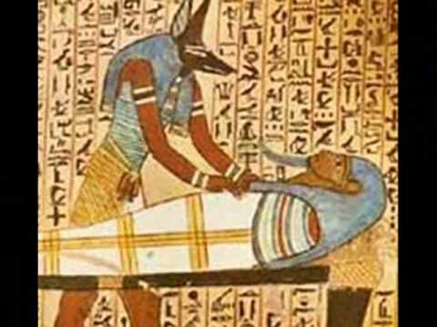
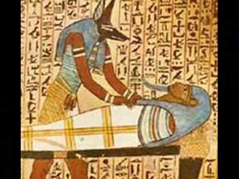
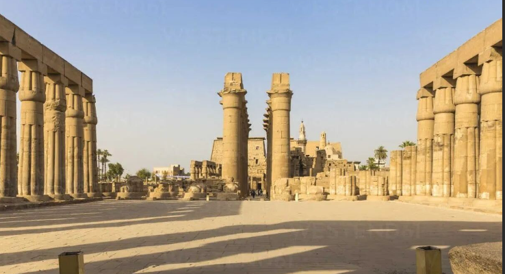
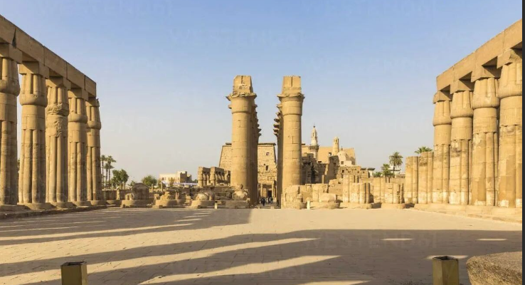

.jpg) 



Հին եգիպտացիների բժշկական խնդիրները ուղղակիորեն բխում էին իրենց միջավայրից։ Նեղոսի անմիջական հարևանությամբ ապրելը և աշխատելը բերում էր մալարիայի վտանգ և հյուծում էր առաջացնելով շիստոսոմոզ, որը ախտահարում էր լյարդը և աղիները։ Վտանգավոր վայրի կենդանիները, ինչպիսիք են կոկորդիլոսները և հիպոպոտամները նույնպես վտանգ էին պարունակում։ Հողագործությանբ և շիարաությամբ զբաղվող աշխատաողների ողնաշարը և հոդերը մեծ ծանրաբեռնվածության էին ենթարկվում և պատերազմի հետևանքով մարմնի վրա ստանում էին տրավմատիկ վնասվածքներ։ Ալյուրի մեջ ավազը հակված էր ատամները փչացնելուն (չնայած կարիեսը հազվադեպ էր)[154]։ Հարուստերի կերակուրը առատ էր շաքարավազով, որն էլ նպաստում էր պարադոնտիտ հիվանդությանը[155]։ Չնայած գերեզմանի պատերին նկարված մարմնի կազմվածքներին, մեծահարուստների ծանր մումիաները ցույց էին տալիս նրանց որկրամոլ կյանքը[156]։ Կյանքի միջին տևողությունը չափահաս տղամարդկանց մոտ՝ 35, իսկ կանաց մոտ 30 տարեկան էր, սակայն չափահաս դառնալը շատ դժվար էր, քանի որ բնակչության մեկ-երրորդի մոտ առկա էր մանկամահացություն[157]։


 

Հին եգիպտացի բժիկները հայտնի էին հնագույն Մերձավոր Արևելքում իրենց բուժման մեթոդներով, և ոմանք, ինչպիսին էր Իմհոթեպը դեռևս հայտի էր իր մահանալուց երկար տարիներ հետո.[158]: Հերոդոտոսը նկատել էր, որ եգիպտացի բժիշկների շրջանում մասնագիտության բարձր աստիճան կա, ոմանք միայն գլուխը և ստամոքսն էին բուժում, իսկ մյուսները աչքի բժշիկներ և ատամնաբույժեր էին[159]։ Բժիկների պատրաստումը տեղի էր ունենում Per Ankh-ում կամ «Կյանքի Տուն» հաստատությունում, հատկապես Նոր թագավորության ընթացքում կենտրոնակայանը գտնվում էր Պեր-Բաստետում և Ուշ ժամանակաշրջանում Աբիդոսում և Սաիսում։ Բժշկական պապիրուսները ցույց են տալիս էմպիրիկ գիտելիքները անատոմիայի, վնասվածքների և դրանց բուճման գործնական մեթոդների մասին[160]։

.jpg)

Վերքերը մշակում էին հում մսի, սպիտակ քաթանի, վերքը թելով կարելու, ցանցի, փափուկ բարձիկի և շվաբրների ու մեղրով թաթախված վիրակապերի միջոցով[161], որպեսզի կանխարգելեն վարակը և ցավը մեղմելու համար օգտագործում էին ափիոն և բելադոննա։ Ամենաշատ գրառումները վերաբերում էր այրվածքների նկարագրմանը, որը բուծելու համար օգտագործում էին արական սեռի երեխաների մոր կաթը և Իսիս աստվածուհուն ուղղված աղոթքներով։ Բորբոսնած հացը, մեղրը և պղինձի աղը նույնպես օգտագործում էին այրվածքները ախտահանելու և վարակը կանխելու նպատակով[162]։ Սխտորն ու սոխը պարբերաբար օգտագործում էին լավ առուղջությունը խթանելու համար և կարծում էին, որ դրանց շնորհիվ կազատվեն ասթմայի ախտանիշերից։ Հին եգիպտացի վիրաբույժները կարում էին վերքերը, անշարժացնում էին կոտրվածքները և վերջույթները, սակայն նրանք հասկացան, որ որոշ վնասվածքներ այնքան լուրջ էին, որ նրանք միայն կարող էին հիվանդին հարմարեցնել մինչև մահ[163]։